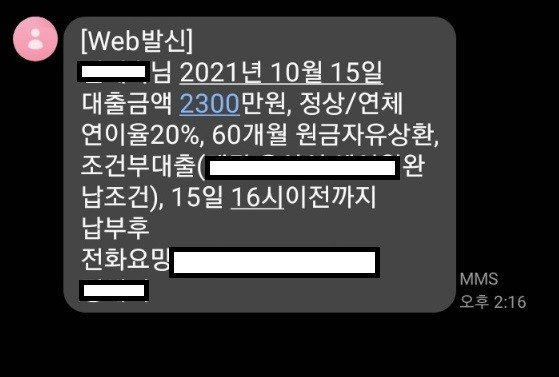
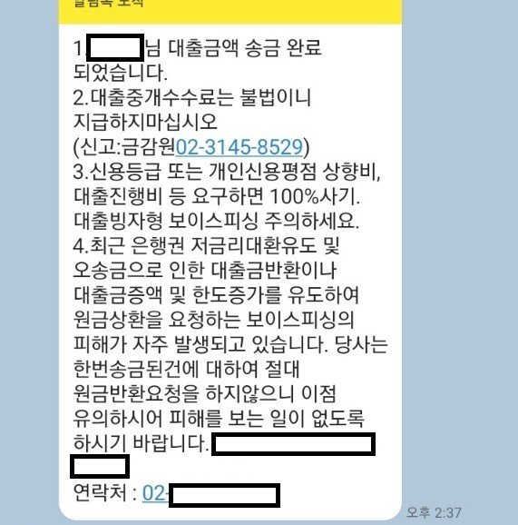
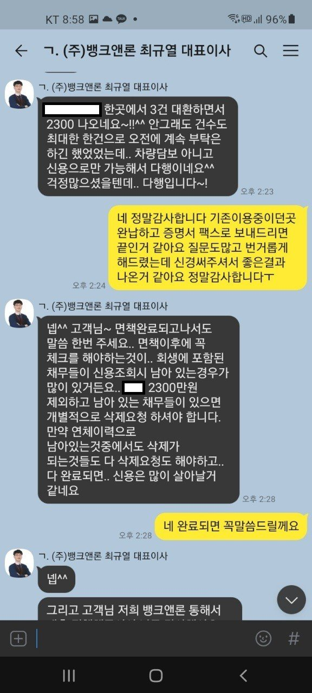

[ 채무통합 ] 개인회생중 채무통합(+추가자금)
직장인 / 10년차 / 4대보험유
연봉 2,800
개인회생 36개월 완납 면책확정 이전
보유중인 부채
대부업 3
각각 1400만원, 300만원
차량담보대출 1500만원(남은원금 1백만원가량)
개인회생 36개월차 완납하고 면책결정 기다리는중
급하게 여유자금이 필요해서 대출을 알아보다가
검색끝에 뱅크앤론을 접하게되어 상담신청후 대출실행 했어요
개인회생 36개월 완납만하면 모든 신용이 다 이전으로 돌아갈줄알고
대출도 가능하고 카드도 발급받을수 있을줄 알았는데
면책이 확정이 되어야하고, 그뒤에도 꾸준히 신용활동을 해야
신용이 회복이 된다는걸 알았네요...
회생중에도 대출이 2건이나 있었고, 대출금리 인하 이전에 받은 대출들이라
24프로 최고금리로 이자만 내고 있는 상태였어요
금액도 큰편이라 추가로 대출은 안되겠구나 막막하던차에
최규열 대표이사님께 상담받고 실행까지 일사천리로 이루어졌네요
세곳으로 나눠져있던 대출을 한곳으로 채무통합 할수 있었고
거기에 필요한 추가자금까지 모두다 승인났어요
금액도 금액이지만 대출건수가 신용에 크게 영향이 미친다는데
이자도 4프로나 내려갔고, 1건으로 대출이 줄어들어 마음이 한결 가볍습니다.
향후 면책결정이 나고 신용이 회복된뒤까지 꼼꼼히 짚어주시고 상담해주셨어요
면책결정이되고 신용회복 단계에서도 꼭 최규열 대표이사님께 상담받으려구요
여러가지 악조건 속에서도 애써주셔서 너무 감사합니다.
밤늦은시간부터 아침이른시간까지 계속 질문하고 귀찮게 해드렸는데
친절하게 하나하나 다 짚어서 자세히 설명해주셔서 이번에 모르던부분 많이 알게됐어요
개인회생을 하기전부터 현재까지 수많은 대출을 하고 갚고 까페나 중계업체를 통해서
대출을 실행해 봤는데,
무조껀 가능하다는 말만믿고 여러군데 조회이력만 남고
결국은 부결...이런경험이 많았어요
그런데 최규열 대표이사님은 무조껀 된다 가능하다는 말씀보다는
현재 제 상황에 대해 먼저 꼼꼼히 질문하시고 파악하시는데 집중하셨고,
그런뒤 가능한 여러방법을 제시해주셨어요
그점에서 너무나 신뢰가 갔고 결국 좋은결과까지 이어졌네요.
다시한번 감사드립니다.



대화에서도 보이시겠지만
정말 당장 대출받는것 이외에도
차후 면책완료된후까지 걱정해주시고
제가 알아야할것들을 상세히 친절히 알려주셨어요
정말 감사합니다.
면책 결정나고 다시 상담드리러 오겠습니다.
갑자기 추워진 날씨에 다들 감기조심하시고 건강하세요~